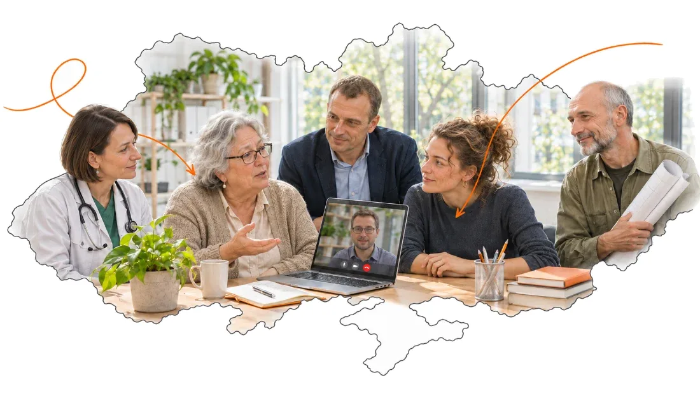
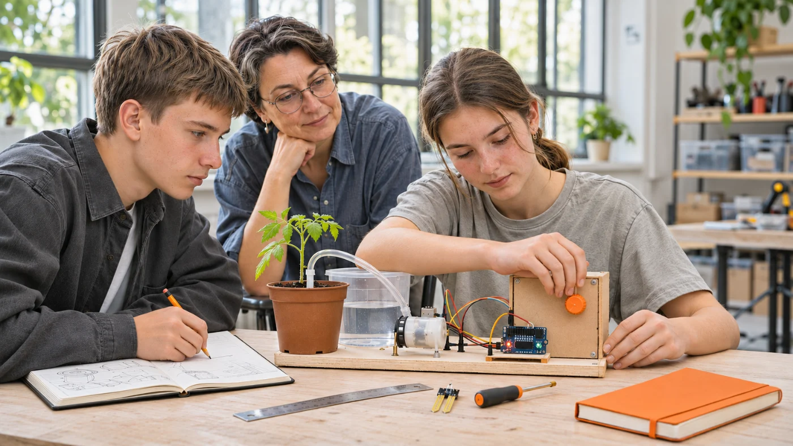
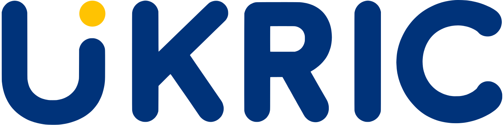
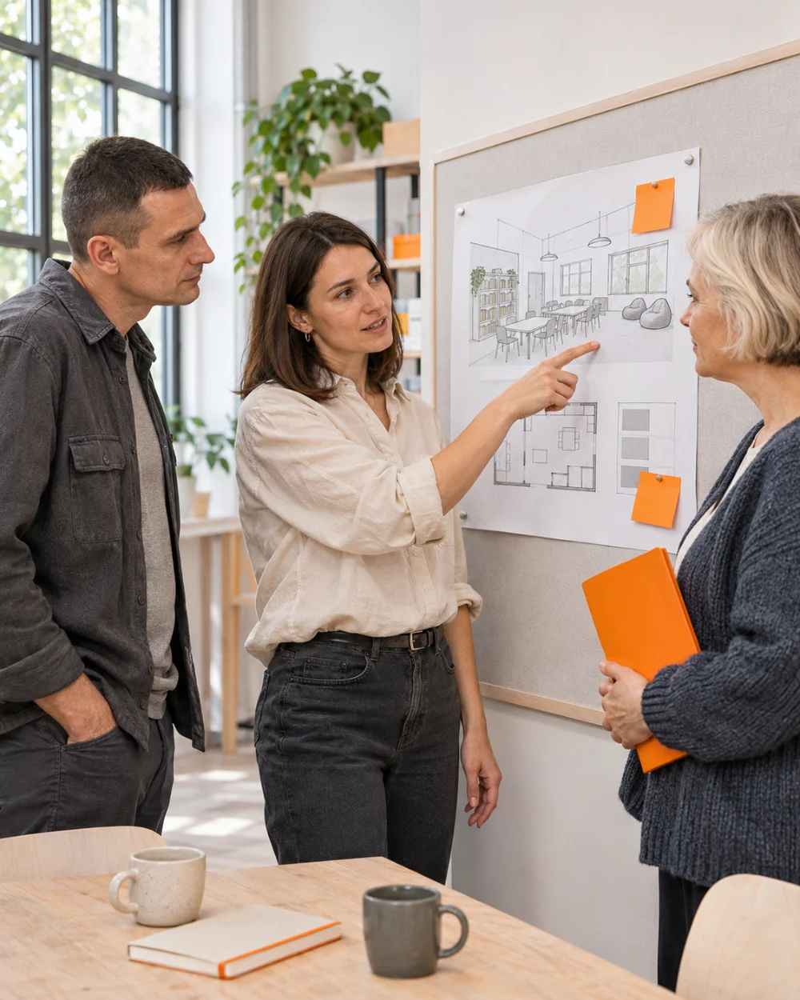

Return · Recruit · Retain
Тут починається brain circulation.
Фонд Next Ukraine повертає, залучає та утримує знання, досвід і таланти — для майбутнього України.

Наша рамка · 3R
Одна рамка.
Різні проєкти.
Три напрями, через які ми працюємо з людським капіталом — від діаспори до молодих винахідників.
Про фонд
Знання, досвід і таланти мають циркулювати — і повертатися в Україну.
Next Ukraine Foundation — український фонд людського капіталу. Ми розвиваємо рамку 3R і даємо інституційний дім проєктам, які її втілюють. Перший із них — UKRIC.
Чому зараз.
Eurostat, 2026 · European Business Association, 2025 · концепт Next UkraineЯк ми працюємо
Даємо проєктам інституційний дім.
Добрі ініціативи часто з'являються раніше, ніж встигають стати організаціями. Ми беремо інституційну частину на себе — команда займається програмою.
Що фонд бере на себе
01
Юридична основа
Реєстрація, договори й правовий супровід.
02
Фінанси та звітність
Приймаємо кошти від імені проєкту й звітуємо донорам.
03
Доступ до донорів
Інституційна довіра та мережа партнерів фонду.
04
Спільна логіка
Рамка 3R, бренд Next Ukraine, координація з іншими проєктами.
Два формати
Без власної організації
Повна парасолька
Фонд стає юридичним і фінансовим домом проєкту.
Із власною реєстрацією
Меморандум
Спільна робота, бренд і взаємна звітність — без об'єднання фінансів.
- Ідея підсилює хоча б один напрям: Return, Recruit або Retain.
- Проєкт не суперечить місії фонду й не створює репутаційних ризиків.
- Команда вже показала, що вміє доводити справу до результату.
- Співпраця вигідна обом сторонам.
Проєкти
Рамка працює через проєкти.

Перший проєкт Next Ukraine
Винахідлива нація. Допомагаємо молоді в Україні відкрити власну здатність змінювати світ на краще — через практичну винахідницьку освіту. Перейти до проєкту ukric.org
У рамці 3R
UKRIC насамперед підсилює Retain.
UKRIC готує дітей не до конкурсів, а до життя: виховує винахідників і людей, які вміють розв'язувати проблеми. Мета — Україна, де винахідливість є частиною національного характеру.
Партнерство
Шукаємо проєкти для рамки 3R.
Маєте ініціативу, що підсилює Return, Recruit або Retain? Next Ukraine може стати для неї інституційним домом — так, як для UKRIC.
- Команди з ідеєю Ще без власної організації — беремо під повну парасольку.
- Зареєстровані організації Працюємо разом за меморандумом, у спільній логіці 3R.
- Університети й компанії Які хочуть запустити власну програму в рамці.

Команда
Хто за цим стоїть.
Фото
Ім'я Прізвище
Роль у фонді
Фото
Ім'я Прізвище
Роль у фонді
Фото
Ім'я Прізвище
Роль у фонді
Співпраця
Обговорімо співпрацю.
Розкажіть коротко про себе — ми відповімо протягом кількох робочих днів.